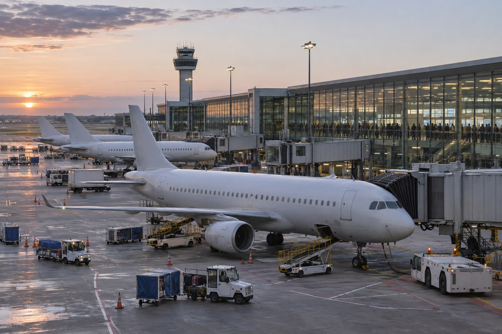

航线 / 解读
阿拉伯航空达曼计划11月20日起每周四班飞往大马士革
计划周一、三、五、日使用A320执飞，11月16日为公告日，20日才是首航计划。

从沙特东部直飞叙利亚的选择计划在11月20日增加。阿拉伯航空达曼11月16日宣布，每周一、三、五、日运行四班。目前首航日期尚未到，因此应称为计划开航。
这是一家以法赫德国王国际机场为基地的新沙特低成本航空公司，9月开始运营。11月19日的安曼将是首条国际线，次日的大马士革为第二个目的地。订票时要确认出发机场是DMM，而不是同品牌的沙迦或阿布扎比航班。
公布时刻为达曼17:30出发、19:45到达大马士革；回程20:30出发、22:45到达达曼。两地同一时区下显示为单程2小时15分，实际仍可能因航路和管制变化。
计划使用A320，但公告没有列出每个日期的座位布局或行李包含范围。比较价格时应把托运行李、选座和餐食全部加入往返总价。
每周四班并非每天都有，理想的去回程组合可能不存在，取消后的下一班也可能相隔数日。应核对DMM、DAM机场代码、运行日和实时状态。
售票不代表自动满足签证、旅行警告或保险条件。它们取决于国籍和最新官方规则。航线结束日期、未来增班也未公布，应同时查看官方订票页和政府旅行指引。